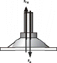
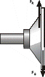
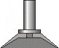
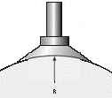
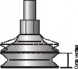

содержание
Техническая информация
Вакуумные присоски - определения
При проектировании вакуумной цепи и выборе присосок необходимо провести ряд расчётов. Ниже приведен список наиболее общих данных, необходимых для проведения таких расчётов.
Теоретическое усилие отрыва
Теоретическое усилие отрыва рассчитывается для вакуума глубиной -0.6 бар. Для дальнейших расчётов требуемое теоретическое усилие необходимо увеличить на коэффициент запаса для учёта потерь на трение и утечки.

Поперечная сила
Измеренное при глубине вакуума -0.6 бар при очищеной и жирной, гладкой и шероховатой поверхности. Не учитывает коэффициент запаса.

Внутренний объём
Используется для вычисления полного объёма ваккумной системы. Это значение так же используется для вычисления времени сброса.

Минимальный радиус закругления изделия
Определяет минимальный радиус изделия, при котором изделие может быть захвачено присоской безопасно

Ход присоски
При вакуумировании присоски сильфонного типа возникает эффект поднятия захваченного объекта.

Выбор материала для присосок
| Применение |
NBR |
Силикон |
| Пищевые продукты |
|
- |
| Детали, покрытые маслом |
- |
|
| Лёгкая маркировка изделий |
|
- |
| Высокие температуры |
|
- |
| Низкие температуры |
|
- |
| Гладкие поверхности (стекло) |
- |
|
| Грубые шероховатые поверхности (дерево, камень) |
- |
|
Список вопросов, помогающих подобрать присоску
| Какие размеры изделия? |
На основе размеров детали рассчитываются силы захвата, количество присосок |
| Какова поверхность изделия (гладкая, шероховатая)? |
Определяет тип и размеры присоски |
| Может ли рабочая поверхность быть загрязнённой и чем? Если да, то какой вид загрязнения может присутствовать? |
Важно для правильного выбора размеров присоски, подбора фильтров. |
| При какой температуре работает присоска? |
Учитывается при выборе материала |
| Требуется ли правильное зажатие/ориентирование/базирование изделия? |
Определяет структуру и исполнение присоски |
| Каково время цикла? |
Участвует в расчётах. Определяет производительность вакуумного генератора. |
| Каковы максимальные ускорения системы? |
Определяет силы, действующие в системе. Также необходимо знать массу перемещаемых изделий. |
| Как движется объект (перемещается, вращается, поворачивается)? |
Влияет на выбор расчётных формул |
Материалы присосок
| Наименование |
Нитрил-бутадиеновая резина |
Силиконовая резина |
| Обозначения |
NBR |
SI |
| Износостойкость |
•• |
• |
| Устойчивость к остаточным деформациям |
•• |
•• |
| Работа на открытом воздухе |
•• |
••• |
| Устойчивость к озону |
• |
•••• |
| Устойчивость к маслу |
•••• |
• |
| Устойчивость к топливу |
•• |
• |
| Устойчивость к спиртам, этанолу 96% |
•••• |
•••• |
| Устойчивость к растворителю |
•• |
•• |
| Общая устойчивость к кислотам |
•• |
•• |
| Устойчивость к пару |
•• |
• |
| Прочности на разрыв |
• |
• |
| Значение трения в мм3(Приблизит.) |
100 –120, t 55 Sh |
180 – 200, 55 Sh |
| Электрическое сопротивление ом/см |
- |
- |
| Устойчивость к кратковременному возд. температур |
от -30°до +120° |
от -60°до +250° |
| Устойчивость к длительному возд. температур |
от -10°до +70° |
oт -30°до +200° |
| Твёрдость по Шору, DIN 53505 |
от 40 до 90 |
oт 30 до 85* |
| Цвет |
чёрный, серый, голубой, светлоголубой |
белый, прозрачный |
•••• отлично
••• очень хорошо
•• хорошо
• неудовлетворительно